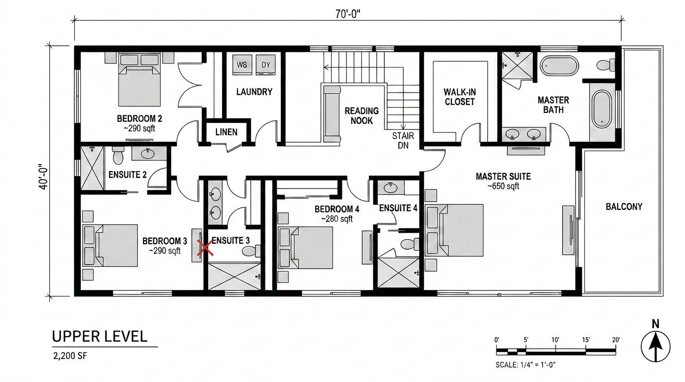

Crowd rankings are not worthless. A thread that gets traction usually reflects something real about what tools people are actually opening on a Monday morning. But a Reddit ranking is a popularity contest with a testing costume on, and the failure mode is predictable: the list rewards the tools with the loudest communities and the most generous free tiers, and it quietly muddles categories that a working architect needs to keep separate.
The thread in question ranked five tools. The top three were Rendershop, Chaos Vantage, and Enscape, with two more filling out the list. We have standalone reviews of several of these already, so rather than re-review them we did something more useful. We treated the ranking as a hypothesis and tested it on a current project: a four-story residential infill with a shared courtyard, the kind of scheme that needs both quick concept frames and a couple of considered final views.
The list, as the thread posted it
For the record, the ranking as it appeared was Rendershop first, described as AI rendering built for architects. Chaos Vantage second, described as real-time photorealism. Enscape third, described as instant VR walkthroughs. The remaining two slots went to a general-purpose diffusion tool and a cloud render service. The descriptions are the thread's own words, and they are the first clue that something is off, because those three descriptions are not describing the same kind of product.
Where the ranking actually holds
Rendershop at number one is defensible
The thread put Rendershop first because it is built specifically for architects, and on our project that framing held up. When we ran Rendershop for a week for our standalone review, the thing that stood out was that the defaults are tuned for buildings rather than for generic interiors or product shots. On the residential infill it produced concept frames that respected massing and needed fewer reprompts than a general-purpose tool to stay on-brief. Number one for the specific job of getting an architect from a model to a presentable frame is a call we will not argue with.
Chaos Vantage at number two is right, for what it is
Chaos Vantage earned its placement on our project too, with one important asterisk. It is a real-time exploration and review tool, and on that job it is excellent. Dropping the courtyard scheme into Vantage and walking the space at full quality during a design review is genuinely the best version of that workflow available. But Vantage is real-time rendering, not AI rendering in the diffusion sense. It belongs near the top of a list of rendering tools. Whether it belongs on a list titled AI rendering tools is the category question the thread did not ask.
| Tool | What it actually is | Best job on our project | Ranking verdict |
|---|---|---|---|
| Rendershop | Diffusion render, architect-tuned | Concept frames from model | Number one holds |
| Chaos Vantage | Real-time rendering and review | Live design-review walkthrough | Good tool, wrong list |
| Enscape | Real-time viz and VR | Client VR walkthrough | Not an AI render tool |
| General diffusion tool | Prompt-to-image, no geometry lock | Mood and early exploration | Overranked for final work |
| Cloud render service | Render farm, path-traced | Final hero frames | Underranked |
Where the ranking falls apart
Enscape is not an AI rendering tool
This is the category error at the center of the thread. Enscape is excellent real-time visualization and VR software. It earns its place in a lot of architects' stacks. But putting it on a list of AI rendering tools, ranked third, tells you the thread was really ranking visualization tools people like, not AI rendering tools specifically. That distinction matters because an architect reading the list to decide where to spend a software budget will draw the wrong conclusion. If you want diffusion-based AI rendering, Enscape is not the third-best option. It is a different product solving a different problem, and a good one.
The general diffusion tool is overranked for final work
The thread placed a general-purpose diffusion tool in the back half of the list, which sounds modest until you read the comments treating it as a serious final-render option. It is not. A prompt-to-image tool with no geometry lock is a mood and exploration instrument. It will generate something beautiful in the neighborhood of your building. For a final client frame that has to match the documented design, it is the wrong tool, and a ranking that does not say so is setting someone up to ship a render they cannot build.
What the thread missed entirely
The most useful tool on our project did not make the list at all in a meaningful position. A proper cloud render service, the path-traced render-farm kind, was the only thing that produced true hero frames for the final presentation. Crowd rankings underweight these tools because they are not exciting, they cost money per frame, and they do not have a viral free tier. But the gap between a good AI concept frame and a genuine final render is still real in 2026, and a top-five list that buries the tool that closes that gap is not a top-five list for people doing real client work.
A crowd ranking tells you what people are opening. It does not tell you what they should be opening for the job in front of them.
Our take, the corrected ranking
If you rebuild the list around the actual job of AI rendering for architecture, here is how it shakes out. Rendershop stays at number one for the specific task of architect-tuned concept and presentation frames. A cloud render service moves up sharply for final hero work, because nothing else closes that quality gap yet. Chaos Vantage stays high but on its own list, real-time review, where it is genuinely best in class. Enscape comes off the AI rendering list entirely and goes back on the visualization list where it belongs and excels. The general diffusion tool stays, but explicitly as an exploration instrument, not a final-render option.
The broader point is the one worth keeping. The thread was not wrong to be excited about these tools. It was wrong to flatten three different categories, real-time review, diffusion rendering, and path-traced final rendering, into one ranking and act like position three meant anything. Before you trust any top-five list, including ours, ask what job each tool is actually for. The ranking that survives that question is the only one worth a software budget.
Do the audit yourself. Take the next crowd ranking that crosses your feed, pick the project on your desk right now, and run the top three tools on the same view. Sort the output by what job each one did, not by what position it held. You will usually find the list was right about one tool, confused about one, and quietly missing the one you actually needed.
Audited by Vista Studios against a live four-story residential infill scheme. No affiliate relationships. Tools run on the same model views and brief.